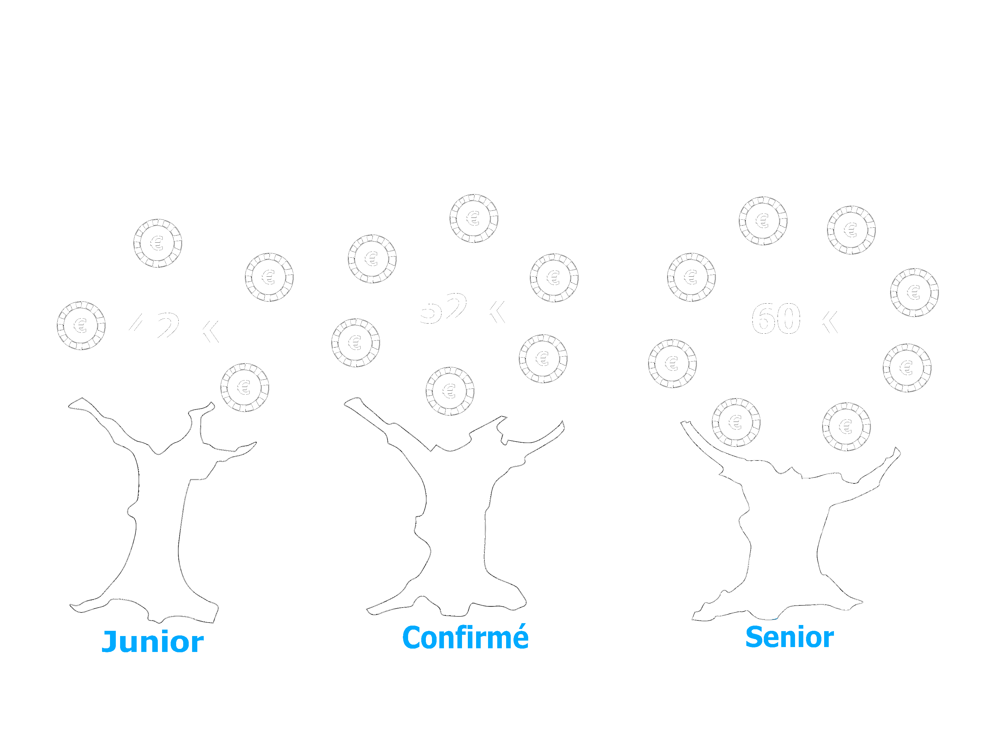

Formation
Un bac +5 est nécessaire pour obtenir ce post. Plusieurs formations permettent d’y accéder : master en statistique ou gestion de données, data mining, ou traitement des données pour l'aide à la décision ; diplôme d'ingénieur spécialisé en statistique ou avec option en data management.
Compétences
Liste des Compétences pour devenir data manager
- La maîtrise des langages de requêtes de type SQL.
- Avoir de bonnes connaissances du secteur d’activité de son entreprise.
- Être doté d’un grand esprit de synthèse.
- Savoir travailler aussi bien en pleine autonomie qu’en équipe.
Missions
Le data manager aborde un ensemble de disciplines clés liés à l’extraction de valeurs à partir de la donnée ; tel que l’intégration, la collecte, le stockage, la modélisation et la visualisation des données. Il se doit d’organiser les données pour rendre leur exploitation optimale. Il doit aussi faire une vulgarisation pour restituer les résultats au non spécialistes.

Rôle
Le data manager est au carrefour de la statistique, de l'informatique et de la stratégie de l'entreprise.

Salaire
Salaire annuel en milliers d'euros
